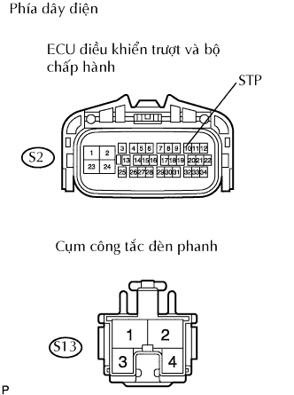
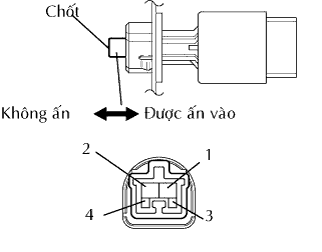
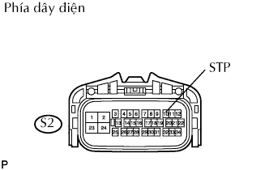

DTC C1249/49 Hở mạch trong mạch công tắc đèn phanh |
| Số mã DTC | Điều kiện phát hiện DTC | Khu vực nghi ngờ |
| C1249/49 | Cả hai điều kiện liên tục trong ít nhất 0.3 giây.
|
|
| 1.KIỂM TRA HOẠT ĐỘNG CỦA CÔNG TẮC ĐÈN PHANH |
Kiểm tra rằng đèn phanh sáng lên khi đạp bàn đạp phanh và tắt đi khi nhả bàn đạp phanh.
| Điều kiện | Tình trạng công tắc đèn phanh |
| Đạp bàn đạp phanh | Sáng lên |
| Nhả bàn đạp phanh | Tắt OFF |
|
| ||||
| OK | |
| 2.KIỂM TRA DÂY ĐIỆN (ECU ĐIỀU KHIỂN TRƯỢT - CÔNG TẮC ĐÈN PHANH) |
|  |
Ngắt giắc nối S2 của ECU.
Ngắt giắc nối S13 của công tắc đèn phanh.
Đo điện trở của các giắc nối phía dây điện.
| Nối dụng cụ đo | Điều kiện tiêu chuẩn |
| S2-10 (STP) - S13-1 | Dưới 1 Ω |
|
| ||||
| OK | |
| 3.KIỂM TRA XEM MÃ DTC CÓ TÁI XUẤT HIỆN KHÔNG |
Xóa các mã DTC.
Lái xe với tốc độ 30 km/h (19 mph) hay cao hơn trong 60 giây hay lâu hơn.
Kiểm tra các mã DTC.
| Kết quả | Đi đến |
| DTC phát ra | A |
| DTC không phát ra | B |
|
| ||||
| A | ||
| ||
| 4.KIỂM TRA CỤM CÔNG TẮC ĐÈN PHANH |
|  |
Ngắt giắc của công tắc.
Đo điện trở của công tắc đèn phanh.
| Nối dụng cụ đo | Tình trạng công tắc | Điều kiện tiêu chuẩn |
| 1 - 2 | Không ấn chốt | Dưới 1 Ω |
| 1 - 2 | Aán chốt vào | 10 kΩ trở lên |
| 3 - 4 | Không ấn chốt | 10 kΩ trở lên |
| 3 - 4 | Aán chốt vào | Dưới 1 Ω |
|
| ||||
| OK | |
| 5.KIỂM TRA DÂY ĐIỆN (ECU ĐIỀU KHIỂN TRƯỢT - ẮC QUY) |
|  |
Ngắt giắc nối S2 của ECU.
Đo điện áp của giắc nối phía dây điện.
| Nối dụng cụ đo | Điều kiện | Điều kiện tiêu chuẩn |
| S2-10 (STP) - Mát thân xe | Đạp bàn đạp phanh | 8 đến 14 V |
| S2-10 (STP) - Mát thân xe | Nhả bàn đạp phanh | Dưới 1 V |
|
| ||||
| OK | |
| 6.KIỂM TRA XEM MÃ DTC CÓ TÁI XUẤT HIỆN KHÔNG |
Xóa các mã DTC.
Lái xe với tốc độ 30 km/h (19 mph) hay cao hơn trong 60 giây hay lâu hơn.
Kiểm tra các mã DTC.
| Kết quả | Đi đến |
| DTC phát ra | A |
| DTC không phát ra | B |
|
| ||||
| A | ||
| ||